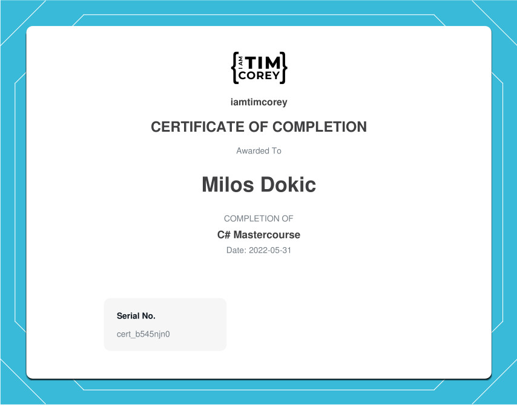
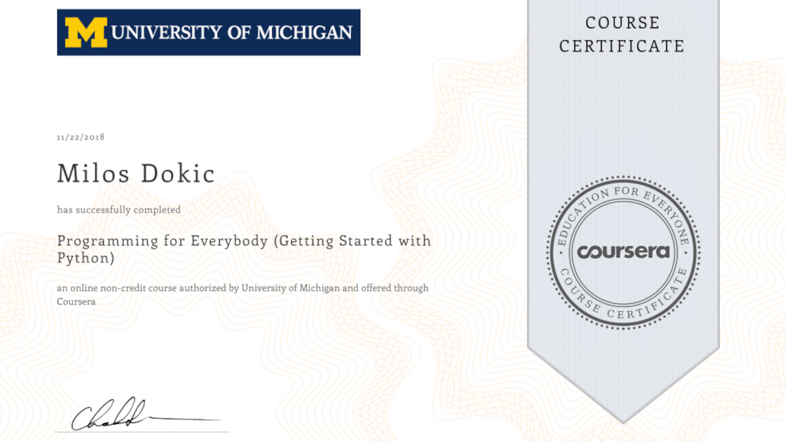

Intro
Hi, my name is Milos Dokic. I am an Automation Technician and Software Programmer with more than 6 years of experience with automation in entertainment industry as a technician and as a manager in my department.
I am currently pursuing a bachelor’s degree in computer science at Deakin University and at the same time fast pacing my learning with bootcamps in web development. Recently I have worked on several projects where I have created custom websites for diferent companies.
Check out my awesome Automation & Coding work.
In my spare time I enjoy practising Brazilian Jiu Jitsu and skydiving.
Automation Work

Here you can find some of my projects I am currently working on, and some of my work in the past that I am very proud of.
Working as an automation console programmer, operator and assisting with strategies for a safe working environment

Responsible for working as part of the automation team to install, maintain and
operate automated show elements and systems in a safe and consistent manner for
Totem. Working as an automation console programmer, operator and assisting with strategies for a
safe working environment at all times.

Accountable for all of Navigator automation system, Stage Technologies rigging and
winches, stage turntables, serapid stage lifts, robotics, control systems, PLC Control
systems and as well in charge of leading a team of public attraction technicians and
managing their schedule accordingly.

As part of the head office installation team, my responsibilities included rigging,
commissioning, automation programming and manufacturing / updating any
necessary paperwork and cue sheets required for every individual project at hand.
I was contracted to work for Princess Cruises on there brand new show where we implemented
14 autonomus drones from Veruty Studios
In collaboration with a colleague, we developed a comprehensive full-stack website leveraging the powerful capabilities of Blazor Web Assembly and .NET 8 frameworks. Our project stands out by integrating a robust Web API, which facilitates seamless interaction between the frontend and backend, ensuring a fluid user experience. We meticulously implemented JWT tokens to secure the application, providing a reliable system for authentication and authorization that supports multiple user roles. This differentiation of roles, including an advanced admin panel, allows for detailed management and control over the application's functionality and user access levels. The entire solution is hosted on Azure as a Software as a Service (SaaS) project, benefiting from Azure's scalable and secure cloud infrastructure. This setup not only enhances the application's performance but also simplifies the maintenance and deployment process torugh GitHub Actions, ensuring our project remains cutting-edge and efficient.
Walker Corporation
Web Developer
Working as a part of Web Development team, across multiple projects and platforms using modern, efficient CSS & JavaScript along with semantic HTML and PHP.
OpenStreetMap Route Planner
(In development)
First project I am working on in my Udacity Nanodegree C++ Program - Building an OpenStreetMap Route Planner with implementing A* search algorithm for finding fastest routes on street maps. (check my progress by clicking the button bellow)
Recreation of Netflix App using ReactJS
(App In development)
Final project from Scrimba Front End Dev - Recreating Netflix App using ReactJS - app currently in development (check my progress by clicking the button bellow)
Coding

Personal project - uni assignment where I created a point and shoot chicken hunt game in C++ using SplashKit library
Web API From Start to Finish

The ultimate C# Series: Part2
The ultimate C# Series: Part1
The Frontend Developer Career Path
Programming for Everybody


References
Cirque du Soleil - Automation Globetrotter
I worked with Milos on the Cirque du Soliel show "Totem",
Where we were both responsible for the automation build in this incredibly busy show.
I found in the short time I worked with him to be a very knowledgable worker
with a great passion for the job in hand. He is a friendly guy and seems
to have a natural ability for communication and is very congenial.
I really hope I get to work with him again soon.
Cirque du Soleil - Lighting / Video Technician
Milos is a super great guy first and foremost! He is your
guy for just about anything. He isn't afraid to get his hands dirty,
crawl into small spaces, or do things that might scare him. He is a
very personable guy and loves to chat with anyone who approaches him.
He keeps his cool during tense moments, and is eager to learn and improve
his portfolio of skills at all times.
Cirque du Soleil - Electronic Maintenance Coordinator
I had the pleasure to work with Miloš in Cirque du Soleil’s show TOTEM
in the Automation department and in many different improvement projects.
It was a real pleasure to work with him as he is not only a good automation
technician, fast learner, confident and good professional but also a great
person to be with.
Princess Cruises - Live Entertainment Project Manager, specializing in theatrical automation, training & live show installations
I have known Milos for over 5 years and most recently worked with him on
Princess Cruise’s largest show to date, Fantastic Journey. Earlier in Milos’s
career with Princess, his role was crew chief, as well as Automation operator. Milos
quickly moved up in the ranks due to his passion to learn, work ethic, and constant
training. During this time as a crew chief I would often call upon Milos to assist
our automation department with programming updates, paperwork, and maintenance checks.
He was quick to assist, eager to do more and always came through when asked to go above
and beyond his normal duties. Milos has a positive attitude and cheerful outlook on life,
which translates into a supportive and productive team atmosphere.
Working alongside Milos during Fantastic Journey was a pleasure. Milos not only brought his
experience and professionalism to the team, but his positive attitude. His willingness to jump
into any challenge sent his way, problem solve, and work independently as well as
collaboratively was an asset to the team and the success of the installation.